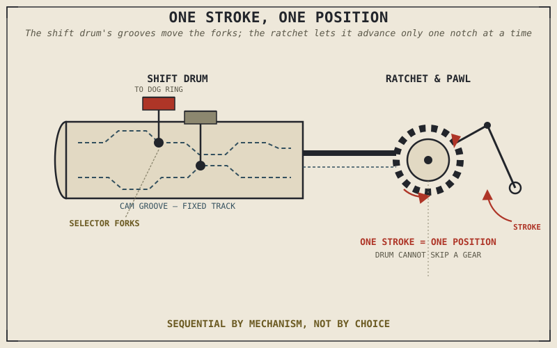

A rushed, half-hearted stab at the gear lever is the single most common cause of a missed shift or a false neutral — not a flaky gearbox, not bad luck, but a foot that didn't move far enough to finish a job the mechanism needed completed all the way. That's a strange thing to claim without first explaining what "finishing the job" actually means mechanically, and that explanation is this chapter's entire purpose.
Chapter 3.3 introduced dog engagement and mentioned, without explaining, that a shift mechanism physically moves the dog rings between gears. Chapter 3.4 explained what those gears actually do once engaged. This chapter closes the gap between the two: the shift drum and selector forks that translate a foot's push on a lever into the precise, physical sliding motion Chapter 3.3's dog rings require.
The Shift Drum: One Rotation, One Position Per Gear
At the heart of a motorcycle gearbox sits a cylindrical shift drum, with grooves — cam tracks — machined into its surface in a specific pattern, one section of pattern for each gear the box offers. Selector forks ride inside these grooves, straddling the sliding dog rings Chapter 3.3 described on the mainshaft and layshaft. As the drum rotates, the shape of its grooves pushes and pulls those selector forks side to side along the shafts, and that side-to-side motion is exactly what slides a dog ring out of one gear's teeth and into the next.
Each discrete rotational position of the drum corresponds to exactly one gear, with the groove pattern engineered so that moving from one position to the next disengages the current gear's dogs at precisely the right moment to engage the next gear's dogs, rather than leaving both, or neither, briefly engaged at once. Neutral, rather than being a special state separate from the numbered gears, is simply one specific drum position, usually sitting between first and second, where the groove pattern happens to leave every dog ring disengaged from every gear at the same time.
Why the Gearbox Can Only Move One Position at a Time
Chapter 3.3 stated that a motorcycle gearbox is strictly sequential — no jumping from second gear straight to fifth — and this chapter can now explain exactly why that's a mechanical fact, not a design preference. The gear lever connects to the shift drum through a ratchet-and-pawl mechanism: each press of the lever engages a spring-loaded pawl against a star-shaped wheel fixed to the drum, rotating that drum by exactly one groove-pattern position before the pawl resets, ready for the next press. There's no physical way to rotate the drum by two positions in a single stroke of the lever, which is precisely why the gearbox can only step to an adjacent gear, one at a time, no matter how forcefully or quickly the lever is worked.
A motorcycle gearbox isn't sequential because engineers decided riders shouldn't skip gears. It's sequential because the ratchet mechanism driving the shift drum is physically incapable of advancing more than one position per stroke of the lever.

A shift drum with grooved cam tracks shown alongside selector forks riding in those grooves, with the ratchet-and-pawl mechanism at the shift shaft advancing the drum one position per lever stroke.
Quickshifters: An Electronic Assist, Not a Different Mechanism
Many modern motorcycles add a quickshifter, an electronic system that senses pressure or movement at the shift lever and briefly interrupts ignition or fuel delivery at the exact instant of a shift, momentarily unloading the torque passing through the currently engaged dog ring so it can slide free without needing the clutch or a closed throttle. It's worth being precise about what this actually changes: nothing about the shift drum, the selector forks, or the dog engagement Chapter 3.3 described is different on a bike equipped with a quickshifter. The electronics simply create a brief, ideal moment for the same mechanical process this chapter has described to happen more smoothly and quickly than a rider's clutch and throttle timing alone typically could.
A Common Misconception, Cleared Up Early
Missed shifts and false neutrals have a reputation for being random, unpredictable gearbox quirks — exactly the kind of unexplained mechanical gremlin Chapter 2.20 argued failures rarely actually are. In the great majority of cases, a missed shift traces to a specific, mechanical cause: the shift lever wasn't pressed with enough travel or force to fully rotate the drum from one groove position to the next, leaving a selector fork — and the dog ring it controls — stranded partway between two gears rather than fully seated in either. A firm, complete motion at the lever, rather than a quick, tentative tap, is usually the entire fix, which reframes what feels like unpredictable mechanical flakiness as a diagnosable, largely rider-technique-dependent cause.
Where This Leads
This chapter completes the picture of how a gear actually gets selected, from a foot's press on the lever all the way to a dog ring sliding into place. What remains in this part's mechanical chain is the final link between the gearbox's output and the ground itself. Chapter 3.6 covers the final drive — chain, belt, or shaft — completing the journey Chapter 3.1 first mapped out from crankshaft to road.
Key Concepts to Remember
- A shift drum's grooved cam tracks guide selector forks, which slide the dog rings Chapter 3.3 described between gears as the drum rotates to each discrete position.
- Neutral is simply one specific drum position, not a separate mechanical state — the position where every dog ring happens to be disengaged from every gear at once.
- A ratchet-and-pawl mechanism advances the shift drum by exactly one position per lever stroke, which is the actual physical reason a motorcycle gearbox can only shift sequentially.
- A quickshifter briefly interrupts ignition or fuel to unload the dog ring during a shift, but changes nothing about the underlying shift drum and dog-engagement mechanism this chapter described.
- Missed shifts and false neutrals are usually traceable to an incomplete lever stroke leaving a selector fork stranded between two gears, not random gearbox flakiness — a diagnosable, technique-dependent cause.
Cross-References
| ← Ch. 3.3 | Introduced dog engagement and sequential shifting without explaining the mechanism; this chapter supplies the shift drum and ratchet-and-pawl explanation behind both. |
| ← Ch. 3.4 | Explained what a gear ratio does once engaged; this chapter explains the physical process of engaging it in the first place. |
| ← Ch. 2.20 | Established that engine failures are traceable to specific causes rather than random; this chapter applies that same reframing to missed shifts and false neutrals. |
| → Ch. 3.6 | Covers the final drive, the last mechanical link in the chain Chapter 3.1 first described from crankshaft to road. |